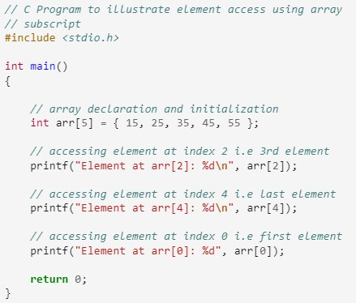

Arrays and Strings
C Arrays
Array in C is one of the most used data structures in C programming. It is a simple and fast way of storing multiple values under a single name. In this article, we will study the different aspects of array in C language such as array declaration, definition, initialization, types of arrays, array syntax, advantages and disadvantages, and many more.
An array in C is a fixed-size collection of similar data items stored in contiguous memory locations. It can be used to store the collection of primitive data types such as int, char, float, etc., and also derived and user-defined data types such as pointers, structures, etc.
C Array Declaration
In C, we have to declare the array like any other variable before using it. We can declare an array by specifying its name, the type of its elements, and the size of its dimensions. When we declare an array in C, the compiler allocates the memory block of the specified size to the array name.
Syntax
Example
C Array Initialization
Initialization in C is the process to assign some initial value to the variable. When the array is declared or allocated memory, the elements of the array contain some garbage value. So, we need to initialize the array to some meaningful value. There are multiple ways in which we can initialize an array in C.
Array Initialization with Declaration
In this method, we initialize the array along with its declaration. We use an initializer list to initialize multiple elements of the array. An initializer list is the list of values enclosed within braces { } separated b a comma.
Array Initialization with Declaration without Size
If we initialize an array using an initializer list, we can skip declaring the size of the array as the compiler can automatically deduce the size of the array in these cases. The size of the array in these cases is equal to the number of elements present in the initializer list as the compiler can automatically deduce the size of the array.
Array Initialization after Declaration (Using Loops)
We initialize the array after the declaration by assigning the initial value to each element individually. We can use for loop, while loop, or do-while loop to assign the value to each element of the array.

Example
Access Array Elements
We can access any element of an array in C using the array subscript operator [ ] and the index value i of the element.
array_name [index];
One thing to note is that the indexing in the array always starts with 0, i.e., the first element is at index 0 and the last element is at N – 1 where N is the number of elements in the array.
Example
Output
Types of Array in C
There are two types of arrays based on the number of dimensions it has. They are as follows:
- One Dimensional Arrays (1D Array)
- Multidimensional Arrays
One Dimensional Array in C
The One-dimensional arrays, also known as 1-D arrays in C are those arrays that have only one dimension.
array_name [size];
Example
Output
Multidimensional Array in C
Multi-dimensional Arrays in C are those arrays that have more than one dimension. Some of the popular multidimensional arrays are 2D arrays and 3D arrays. We can declare arrays with more dimensions than 3d arrays but they are avoided as they get very complex and occupy a large amount of space.
Two-Dimensional Array in C
A Two-Dimensional array or 2D array in C is an array that has exactly two dimensions. They can be visualized in the form of rows and columns organized in a two-dimensional plane.
array_name[size1] [size2];
Example
Output
Three-Dimensional Array in C
Another popular form of a multi-dimensional array is Three Dimensional Array or 3D Array. A 3D array has exactly three dimensions. It can be visualized as a collection of 2D arrays stacked on top of each other to create the third dimension.
array_name [size1] [size2] [size3];
Example
Output
Strings in C
A String in C programming is a sequence of characters terminated with a null character ‘\0’. The C String is stored as an array of characters. The difference between a character array and a C string is that the string in C is terminated with a unique character ‘\0’.

C String Declaration Syntax
Declaring a string in C is as simple as declaring a one-dimensional array. Below is the basic syntax for declaring a string.
char string_name[size];
In the above syntax string_name is any name given to the string variable and size is used to define the length of the string, i.e the number of characters strings will store
There is an extra terminating character which is the Null character (‘\0’) used to indicate the termination of a string that differs strings from normal character arrays.
C String Initialization
A string in C can be initialized in different ways. We will explain this with the help of an example.
- Assigning a String Literal without Size
- Assigning a String Literal with a Predefined Size
- Assigning Character by Character with Size
- Assigning Character by Character without Size